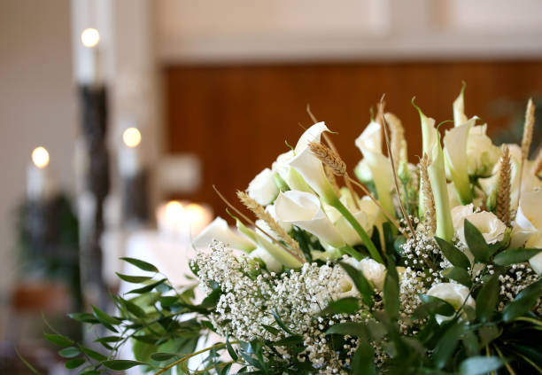
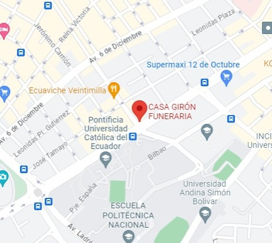

El Grupo Jardines del valle, es la funeraria más grande del Ecuador, con 27 años de experiencia. Ofrecemos los siguientes servicios
- Cremación Directa.
- Velación con Cremación.
- Translados
- Nichos y tumbas.
- Documentasción y trámites.
0997968953
Av. 12 de Octubre 1245 y, Av.Gral Ignacio Veintimilla esq.
Quito
Asesora personal con expericiencia en servicios Funerarios en todo el proceso exequial con 7 años de experiencia.
Asesora personal con amplio conocimiento en servicios exequiales. Con seis años de experiencia.